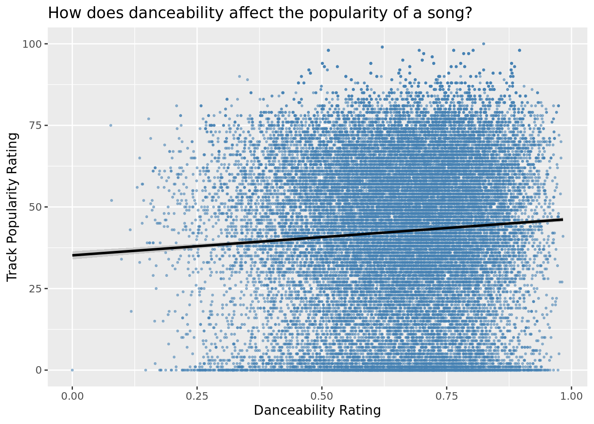
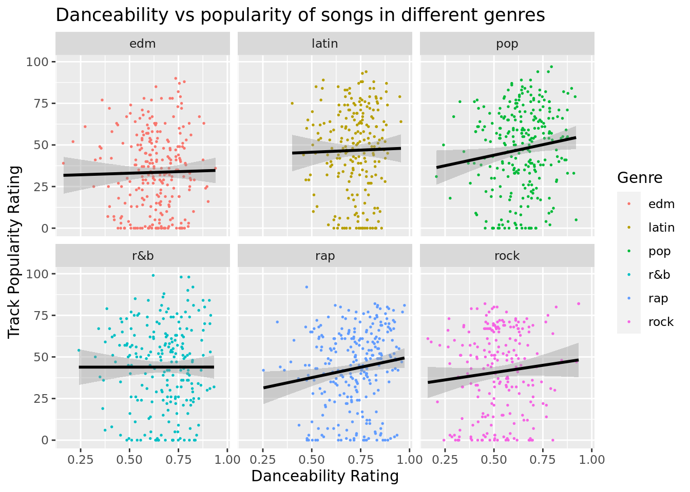

library(tidyverse)
library(tidymodels)Project title
Report
Introduction and data
Within the music industry there is always a desire to be able to predict the next big song. Different factors will always play into whether or not a song becomes popular. We wish to explore how danceability, in particular, affects the popularity of songs. To dig a bit deeper, we want to see if the impact of danceability on popularity changes depending on which genre we are exploring. We are hoping that by exploring this correlation we can create a predictive model for popularity based on danceability. Based on the correlations we find by genre this model may be more accurate for certain genres more so than others. We have three research questions: How does danceability affect the popularity of songs? How does this vary between genres? How do other song variables influence this relationship.
Our research project will center around the Spotifyr, an open source music dataset provided by Spotify. The dataset contains around 5,000 songs from six major music categories (EDM, Latin, Pop, R&B, Rap, and Rock). These genres were selected from Every Noise, which is a visualization created and maintained by a genre taxonomist. The top four genre’s from Every Noise were used to find 20 playlists that contained relevant songs. The 5000 songs from these playlists were added to the dataset that we are analyzing. This data was gathered for a tidytuesday podcast. For each song, the data set contains general information such as the songs album, artist, release data, but also more interesting statistics on danceability, energy, and popularity. The Spotify Web API was used to gain information about the songs. Spotify has twelve different features that are associated with songs. These are included within the dataset as variables.
We considered different ethical questions surrounding data collection. Specifically, we explored how songs were chosen from Spotify and acquisition bias; however, do not believe there are significant ethical concerns related to this data and data collection.
We hypothesize that there will be a positive correlation between danceability and popularity, but that correlation will differ between genres. We expect the Latin genre to have the greatest correlation. Additionally, we hypothesize that the tempo and the energy of the song (when taken into consideration with the danceability rating) will better be able to predict track popularity rating.
Literature Review
Our data set was originally found through the #tidytuesday project on GitHub. Kaylin Pavlik, a blogger, explored this dataset in various ways. She explored audio features by genre. She found that EDM tracks are the least likely to have acoustic features, but highly likely to have high energy with low valence. Additionally, through density/line plots, she found that danceability, tempo, valence, and energy had the largest differences by genre. We are building on her research by specifically analyzing the differences between danceability by genre. Our research question digs deeper into this question. Additionally, she found that Latin music was very danceable, while rock music had very little danceability. We will continue to look into the specifics of these differences through linear regression models ^[https://www.kaylinpavlik.com/classifying-songs-genres].
Amri Rohman also analyzed this dataset ^[https://rpubs.com/amrirohman/spotify-song]. She specifically looked at songs and their popularity. In 2020 she found that the most popular Spotify song was Dance Monkey. She also looked at the differences in tempo for each genre, faceted by different eras of music. She found that rap songs in the 2000s had slower tempos. We are going to build on these research questions by looking at the popularity of songs by genre faceted by dancability. We are both analyzing how different song features vary across genres.
Although other groups/people have looked into the same Spotifyr datset from tidytuesday, we are planning on looking into vastly different research questions. Because this is a large data set with many variables, there are many questions to look into. We hope to dive into popularity to analyze reasons as to why songs and genres have gained notoriety.
Methodology
We plan to answer this research question through a linear regression analysis looking at if the danceability of a song can be predictive for its popularity. This regression analysis will likely consider the energy and tempo variables in the regression analysis. This analysis will be faceted across genres as well. First, we will look to see at the general relationship between danceability rating and track popularity rating of songs in the data. Then, we will look to into the level of this relationship in terms of different types of music by assessing genre as variable. In addition to these basic visualizations, we will also calculate a number of summary statistics that will further assist in other analyses and allow us to better understand the data. This includes calculation of the mean danceability rating and popularity ratings specifically to each genre.
Additionally, we will conduct a regression analysis to predict popularity on the basis of danceability ratings. This linear regression will have additional models looking specifically at Latin and Rap genres as well. There will also be a regression analysis conducted to assess how other variables related to a song influence the relationship between danceability and popularity. The approriate type of regression for this would be a multiple linear regression, taking into consideration multiple explanatory variables to predict track popularity. The specific quantitative variables we want to consider are energy and tempo because of their relation to danceability in this regression analysis as similarly considered by a similar project by Ochi et al. (n.d.). We will assess these types of regressions with both additive and interaction models to see which type of model best fits the data.
To assess these models created, we will conduct calculations for adjusted R-squared and AIC.
Data
spotify_songs <- readr::read_csv('https://raw.githubusercontent.com/rfordatascience/tidytuesday/master/data/2020/2020-01-21/spotify_songs.csv')
head(spotify_songs)# A tibble: 6 × 23
track_id track…¹ track…² track…³ track…⁴ track…⁵ track…⁶ playl…⁷ playl…⁸
<chr> <chr> <chr> <dbl> <chr> <chr> <chr> <chr> <chr>
1 6f807x0ima9a1… I Don'… Ed She… 66 2oCs0D… I Don'… 2019-0… Pop Re… 37i9dQ…
2 0r7CVbZTWZgbT… Memori… Maroon… 67 63rPSO… Memori… 2019-1… Pop Re… 37i9dQ…
3 1z1Hg7Vb0AhHD… All th… Zara L… 70 1HoSmj… All th… 2019-0… Pop Re… 37i9dQ…
4 75FpbthrwQmzH… Call Y… The Ch… 60 1nqYsO… Call Y… 2019-0… Pop Re… 37i9dQ…
5 1e8PAfcKUYoKk… Someon… Lewis … 69 7m7vv9… Someon… 2019-0… Pop Re… 37i9dQ…
6 7fvUMiyapMsRR… Beauti… Ed She… 67 2yiy9c… Beauti… 2019-0… Pop Re… 37i9dQ…
# … with 14 more variables: playlist_genre <chr>, playlist_subgenre <chr>,
# danceability <dbl>, energy <dbl>, key <dbl>, loudness <dbl>, mode <dbl>,
# speechiness <dbl>, acousticness <dbl>, instrumentalness <dbl>,
# liveness <dbl>, valence <dbl>, tempo <dbl>, duration_ms <dbl>, and
# abbreviated variable names ¹track_name, ²track_artist, ³track_popularity,
# ⁴track_album_id, ⁵track_album_name, ⁶track_album_release_date,
# ⁷playlist_name, ⁸playlist_idnrow(spotify_songs)[1] 32833Results and Analysis
First we will plot out general popularity of songs versus their adaptability score. This will allow us to visualize how dance-ability affects song’s popularity overall in the data set.
set.seed(33)
spotify_songs |>
sample_n(size = 1500) |>
ggplot(
aes(
x = danceability,
y = track_popularity,
color = playlist_genre
)
) +
geom_point(color = "steelblue", alpha = .5, size = .5) +
geom_smooth(method = "lm", color = "black") +
labs(
x = "Danceability Rating",
y = "Track Popularity Rating",
title = "How does danceability affect the popularity of a song?"
)`geom_smooth()` using formula = 'y ~ x'
From the above plot we see a very subtle correlation between the danceability rating and its popularity for this random sampling of 1000 songs. However, with so many data points on this plot danceability likely is not a great predictor for track popularity generally.
Next, we’d like to see what this plot looks like if we facet it by the genre.
set.seed(33)
spotify_songs |>
sample_n(size = 1500) |>
ggplot(
aes(
x = danceability,
y = track_popularity,
color = playlist_genre
)
) +
geom_point(size = .3) +
geom_smooth(method = "lm", color = "black") +
facet_wrap(~playlist_genre) +
labs(
x = "Danceability Rating",
y = "Track Popularity Rating",
title = "Danceability vs popularity of songs in different genres",
color = "Genre"
)`geom_smooth()` using formula = 'y ~ x'
Here we can see that there is certainly a difference in how dance-ability affects the popularity of a track depending on the songs genre. Our highest correlations found here are rap and pop while we even see a slightly decreasing slope for r&b. However, its worth noting that some genres tend to have a higher dance-ability score on average such as Latin and rap. While rock has a higher correlation than some other genres, on average its songs are less dance-able than the others.
Now, we’d like to train a linear regression model to predict popularity using dance-ability. We’ll train three separate models here.
- A general model that can be used for any genre
- A model that predicts how dance-ability affects the popularity of a song from the Latin genre.
- A model that predicts how dance-ability affects the popularity of a song from the rap genre.
general_dance <- linear_reg() |>
set_engine("lm") |>
fit(track_popularity ~ danceability, data = spotify_songs)
latin_songs <-
spotify_songs |>
filter(playlist_genre == "latin")
latin_dance <- linear_reg() |>
set_engine("lm") |>
fit(track_popularity ~ danceability, data = latin_songs)
rap_songs <-
spotify_songs |>
filter(playlist_genre == "rap")
rap_dance <- linear_reg() |>
set_engine("lm") |>
fit(track_popularity ~ danceability, data = rap_songs)
general_dance |>
tidy()# A tibble: 2 × 5
term estimate std.error statistic p.value
<chr> <dbl> <dbl> <dbl> <dbl>
1 (Intercept) 35.2 0.636 55.3 0
2 danceability 11.1 0.948 11.8 7.57e-32latin_dance |>
tidy()# A tibble: 2 × 5
term estimate std.error statistic p.value
<chr> <dbl> <dbl> <dbl> <dbl>
1 (Intercept) 40.8 2.22 18.3 9.23e-73
2 danceability 8.78 3.08 2.85 4.37e- 3rap_dance |>
tidy()# A tibble: 2 × 5
term estimate std.error statistic p.value
<chr> <dbl> <dbl> <dbl> <dbl>
1 (Intercept) 25.5 1.63 15.6 5.39e-54
2 danceability 24.7 2.23 11.1 3.47e-28\(pop_{general} = 35.2 + 11.2 * danceability\)
For a 1 increase in danceability rating, there’s an estimated mean change of a song’s popularity rating (general song w/ no designated genre) by 11.2.
When danceability is 0, there is an estimated mean popularity rating of 35.2.
\(pop_{latin} = 40.7 + 8.8 * danceability\)
For a 1 increase in danceability rating, there’s an estimated mean change of a latin song’s popularity rating by up by 8.8.
When danceability is 0, there is an estimated mean popularity rating of 40.7.
\(pop_{rap} = 25.5 + 24.7 * danceability\)
For a 1 increase in danceability rating, there’s an estimated mean change of a song’s popularity rating by 11.2.
When danceability is 0, there is an estimated mean popularity rating of 25.5.
Model Fit Assessments
Now we’d like to assess how well the regression model explains the observed data. We will do this by calculating adjusted R squared values.
general_dance |>
glance() |>
pull(adj.r.squared) [1] 0.00416193latin_dance |>
glance() |>
pull(adj.r.squared) [1] 0.001381617rap_dance |>
glance() |>
pull(adj.r.squared) [1] 0.02070946adjusted_R2_table <- data.frame(
R2_general_dance = 0.00416193,
R2_latin_dance = 0.001381617,
R2_rap_dance = 0.02070946
)
glimpse(adjusted_R2_table)Rows: 1
Columns: 3
$ R2_general_dance <dbl> 0.00416193
$ R2_latin_dance <dbl> 0.001381617
$ R2_rap_dance <dbl> 0.02070946Based on the adjusted R squared values, danceability rating as an explanatory variable is not a good predictor of popularity rating in general and in the latin and rap genres. The adjusted R squared values between 0.14-4.2% reveals a very low variability in popularity is explained by the regression model.
Now we’d like to assess how well the regression model explains the observed data using AIC and an ROC curve.
# | label: AIC-1
general_dance |>
glance() |>
pull(AIC) |>
tibble()# A tibble: 1 × 1
`pull(glance(general_dance), AIC)`
<dbl>
1 304372.latin_dance |>
glance() |>
pull(AIC) |>
tibble()# A tibble: 1 × 1
`pull(glance(latin_dance), AIC)`
<dbl>
1 47986.rap_dance |>
glance() |>
pull(AIC) |>
tibble()# A tibble: 1 × 1
`pull(glance(rap_dance), AIC)`
<dbl>
1 52373.LR_AIC_table <- data.frame(
AIC_general_dance = 304371.9,
AIC_latin_dance = 47986.36,
AIC_rap_dance = 52373.25
)
glimpse(LR_AIC_table)Rows: 1
Columns: 3
$ AIC_general_dance <dbl> 304371.9
$ AIC_latin_dance <dbl> 47986.36
$ AIC_rap_dance <dbl> 52373.25Based on AIC calculations, the general model was best fit because it had the lowest AIC value at 304371.9, where the latin model had an AIC of 47986.36 and rap model had an AIC of 52373.25. AIC selects a model with the least mean squared error, so a lower value is preferable ^[http://www.sthda.com/english/articles/38-regression-model-validation/158-regression-model-accuracy-metrics-r-square-aic-bic-cp-and-more/].
Multiple Linear Regression Models
Now, we’d like to train multiple linear regression models to predict popularity using dance-ability, tempo, and energy. We’ll train multiple separate models.
- An additive model for danceability rating + tempo.
- An additive model for danceability rating + energy.
- An additive model for danceability rating + tempo + energy.
- An interaction model for danceability rating * tempo.
- An interaction model for danceability rating * energy.
- An interaction model for danceability rating * tempo * energy.
#additive models
dance_plus_tempo <- linear_reg() |>
set_engine("lm") |>
fit(track_popularity ~ danceability + tempo, data = spotify_songs)
dance_plus_tempo |>
glance() |>
pull(AIC)[1] 304372.5dance_plus_energy <- linear_reg() |>
set_engine("lm") |>
fit(track_popularity ~ danceability + energy, data = spotify_songs)
dance_plus_energy |>
glance() |>
pull(AIC)[1] 304015.9dance_plus_tempo_energy <- linear_reg() |>
set_engine("lm") |>
fit(track_popularity ~ danceability + tempo + energy, data = spotify_songs)
dance_plus_tempo_energy |>
glance() |>
pull(AIC) [1] 304003.1#interactions
dance_int_tempo <- linear_reg() |>
set_engine("lm") |>
fit(track_popularity ~ danceability * tempo, data = spotify_songs)
dance_int_tempo |>
glance() |>
pull(AIC)[1] 304374.2dance_int_energy <- linear_reg() |>
set_engine("lm") |>
fit(track_popularity ~ danceability * energy, data = spotify_songs)
dance_int_energy |>
glance() |>
pull(AIC)[1] 304012.7dance_int_tempo_energy <- linear_reg() |>
set_engine("lm") |>
fit(track_popularity ~ danceability * tempo * energy, data = spotify_songs)
dance_int_tempo_energy |>
glance() |>
pull(AIC) [1] 303995.3Given that the interaction model between danceability rating, tempo, and energy resulted in the lowest AIC value (303995.3), it is the best fit of the ones assessed at modeling popularity of a song.
MLR_AIC_table <- data.frame(
AIC_dance_plus_tempo = 304372.5,
AIC_dance_plus_energy = 304015.9,
AIC_dance_plus_tempo_energy = 304003.1,
AIC_dance_int_tempo = 304374.2,
AIC_dance_int_energy = 304012.7,
AIC_dance_int_tempo_energy = 303995.3
)
glimpse(MLR_AIC_table)Rows: 1
Columns: 6
$ AIC_dance_plus_tempo <dbl> 304372.5
$ AIC_dance_plus_energy <dbl> 304015.9
$ AIC_dance_plus_tempo_energy <dbl> 304003.1
$ AIC_dance_int_tempo <dbl> 304374.2
$ AIC_dance_int_energy <dbl> 304012.7
$ AIC_dance_int_tempo_energy <dbl> 303995.3